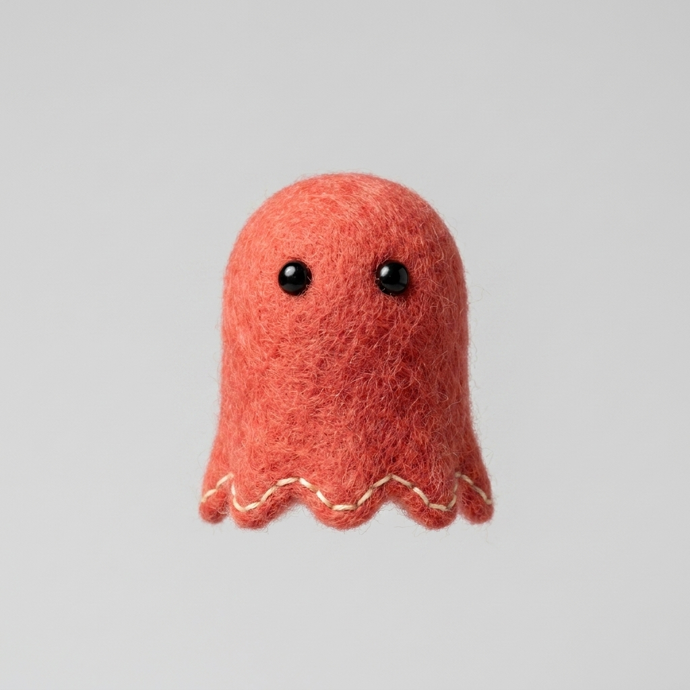
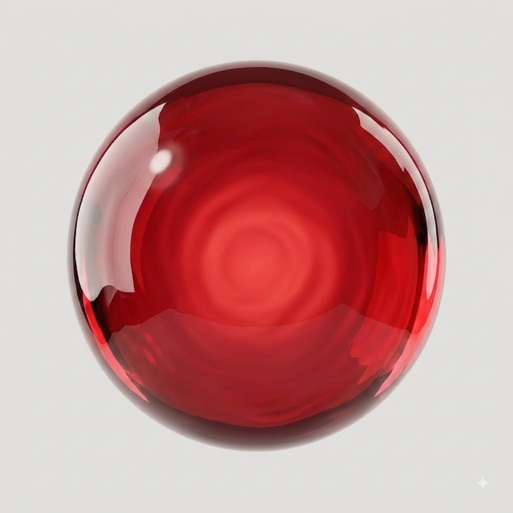
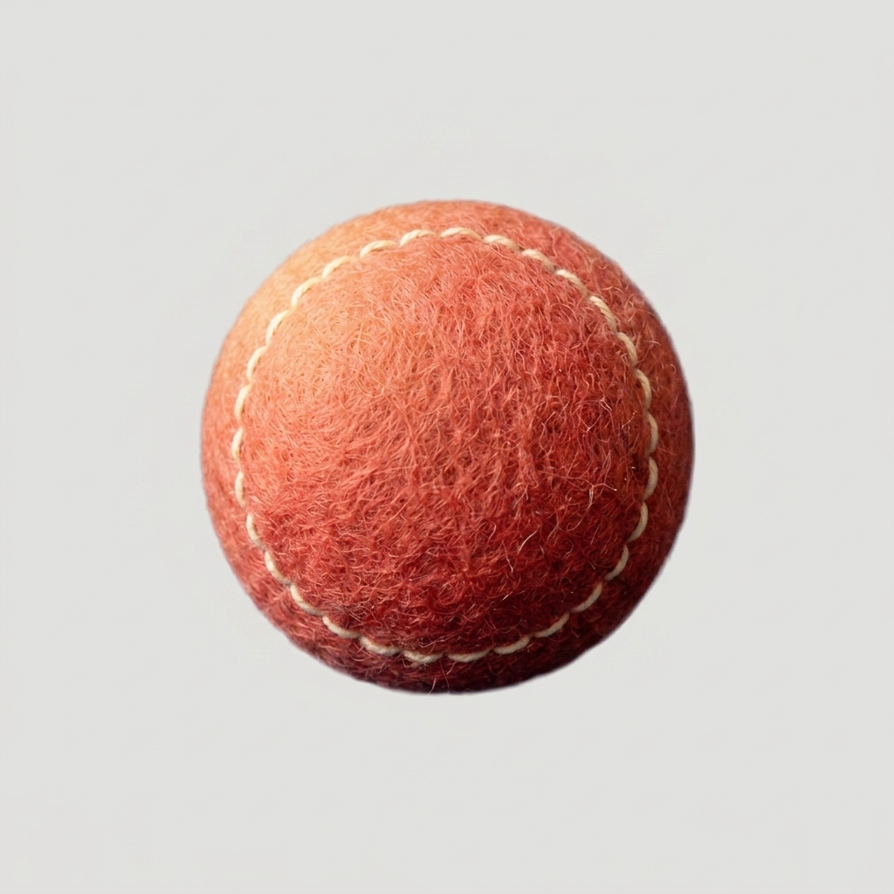
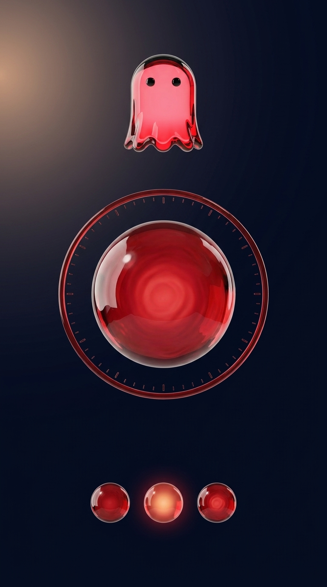
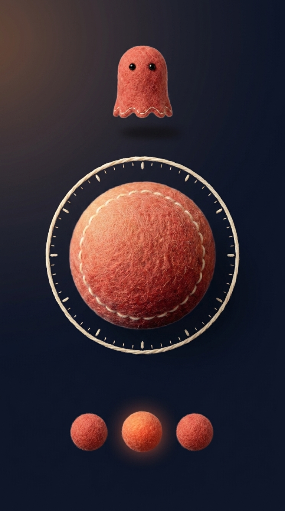

① 마스코트 본체
실루엣·비율·앵글·눈 위치 계승 지시. 펠트판은 비교용 시안 — 정본은 그대로다.


② 녹음 오브 — 앱의 신호 1점
같은 크기·같은 앵글·같은 중앙 배치. 펠트판은 크림 손스티치 링 1줄.


③ 앱 화면 — 갈리는 자리
동일 배치 명세: 상단 마스코트 · 중앙 오브+눈금 다이얼 링 · 하단 구슬 3(가운데만 밝게) · 글자 0. 낱개가 아니라 «화면에 앉았을 때»를 보는 컷.

